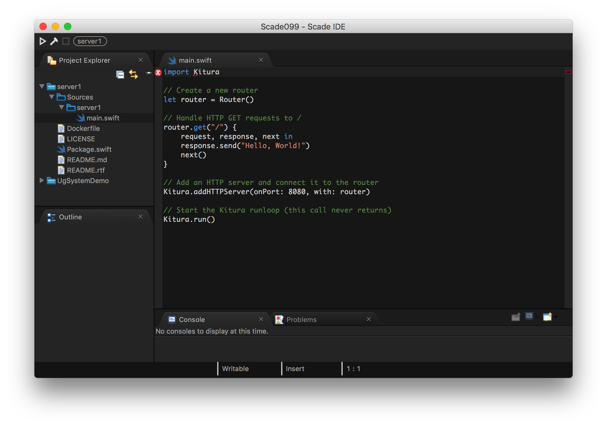

KituraStudio is a new IDE for Server-side Swift from the SCADE team. It provides a beautiful coding experience for Kitura server applications and native cross platform mobile Swift applications.

With KituraStudio, you create your Swift server project and thanks to the built-in Docker support, compile and run your Kitura app on Linux using your Mac. You use the same runtime environment for development, QA and production, thus greatly simplifying the development cycle.
○ Compile and run Kitura in Docker
○ Kitura Profiles support
○ Advanced Swift Editor
○ Quick feedback loop
○ SPM Support
1. Apple macOS.
2. Xcode 10.
3. Docker Desktop.
You can find a full Getting Started guide at the SCADE site, showing how in a few quick steps you can create a Kitura project and run inside Docker on your Mac.
Documentation and installation instructions can be found here.
Feedback and discussion at KituraStudio Slack channel.
For FAQ, to report bugs, ask questions and raise feature requests go to the free SCADE support center.